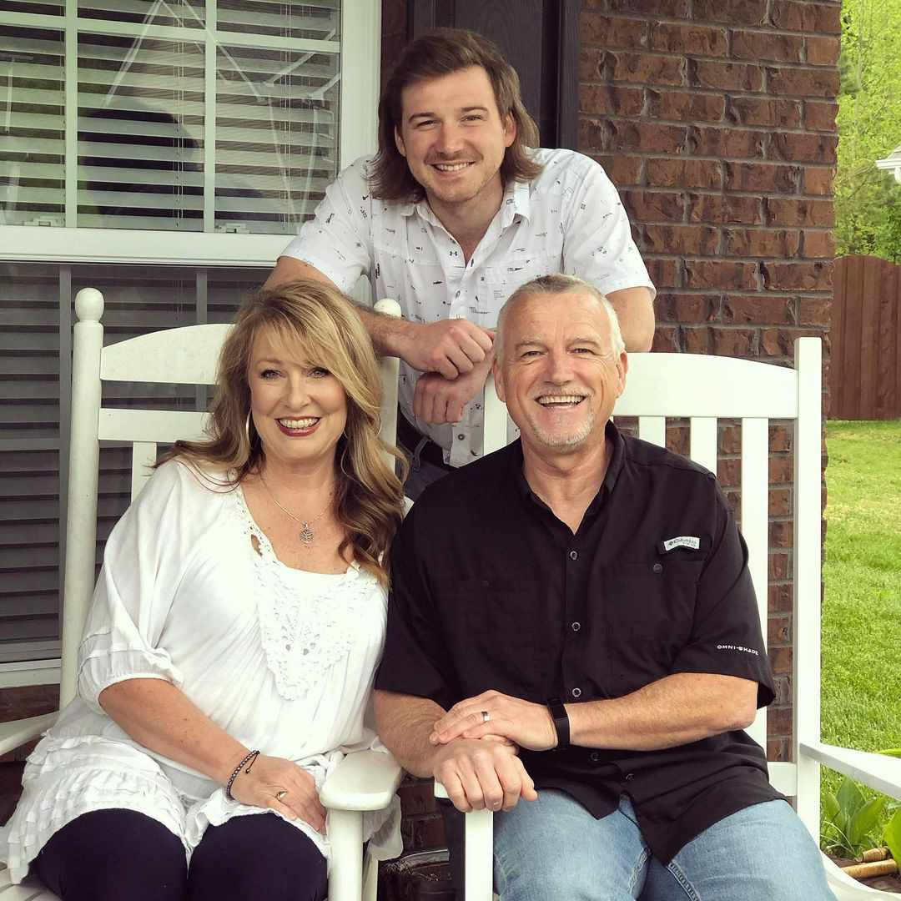
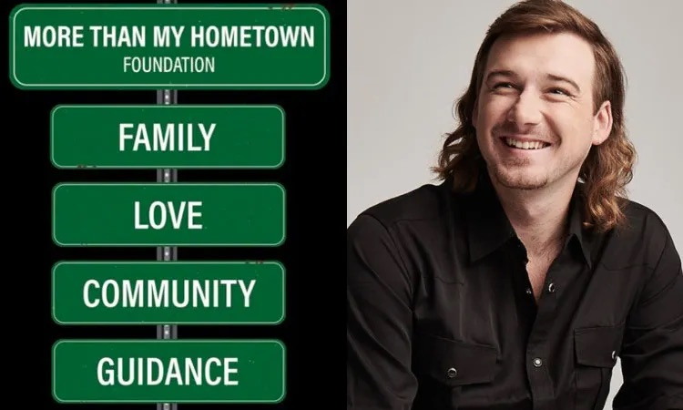

Who is Morgan Wallen?
Morgan Cole Wallen was born on May 13, 1993, in Sneedville, Tennessee and is currently 29 years old. He is the son of Tommy and Lesli Wallen, and the brother of Ashlyne, Mikaela, and Lacey Wallen. In 2020, Morgan welcomed a son, Indigo Wilder, into the world. Although he is no longer with the mother of his son, they coparent together for the sake of their son. When he is not on tour, Morgan resides in Nashville, Tennessee. Morgan Wallen is a big sports fan and even believed that he would play baseball professionally one day, until an elbow injury forced him to quit. This was the point at which he started to consider music as a career. Today, he is one of the most popular country artists in the United States, and as of January 2023, Wallen had a net worth of around $4 million dollars.
Rise To Fame

In 2014, 20-year-old Morgan Wallen appeared on the popular American singing competition, The Voice, until he was eventually eliminated during the playoff round. In an interview later on, Wallen reported that the reason he got kicked off was because his coaches wanted him to sing pop music and when he took the chance to sing a country song, they voted him off. Although he didn’t win The Voice, he caught the nation’s attention. In 2015, he signed to Panacea records and released his first single, “Spin You Around”. After its great success, Big Loud Records signed Morgan in 2016, where he released his first single with them, “The Way I Talk”. In 2018, Wallen released his debut album, with his singles topping the charts.
More Than My Hometown Foundation
In 2021, Morgan Wallen established the “More than My Hometown Foundation”. Its purpose is to help young people have the best chance at life by finding families that can provide loving and safe homes to them. Morgan’s vision is that a child’s resources are not limited to their circumstances. His inspiration was in part due to the transformation he saw in his youngest sister Lacey, after his parents adopted her.
Awards
- 2020: Country Music Association Award for New Artist of the Year
- 2020: iHeartRadio Music Award for Best New Country Artist
- 2021: Billboard Music Award for Top Country Artist
- 2021: Billboard Music Award for Top Country Album
- 2022: Academy of Country Music Award for Album of the Year

- 2022: iHeartRadio Music Award for Country Album of the Year
- 2022: Billboard Music Award for Top Country Male Artist
- 2022: American Music Award for Favorite Male Artist Country
- 2022: American Music Award for Favorite Song Country